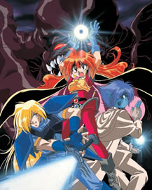

|
| Slayers vai ganhar nova série de TV depois de 10 anos
Confirmando os últimos rumores sobre a possibilidade para um novo anime de Slayers, a nova edição da revista Dragon Magazine confirmou que está em andamento a produção de uma nova série de TV de Slayers. Por enquanto foi apenas confirmada a produção, e não há nenhuma previsão. Já se passaram 10 anos desde que Slayers Try, a terceira temporada, terminou no Japão em 1997. Depois disso veio muitos filmes de Slayers, até terminar com o Slayers Premium em 2001. Ele foi um dos maiores títulos da época que se encaixava ao lado de Evangelion e Guerreiras Mágicas de Rayearth. Update 27/02/2008 14:30 1. Será uma história original criada exclusivamente
para o anime, assim como foi Slayers Try. * Essas informações ainda estão em papel e podem sofrer mudanças até o anúncio oficial.

|
| Retornar para Página Inicial |